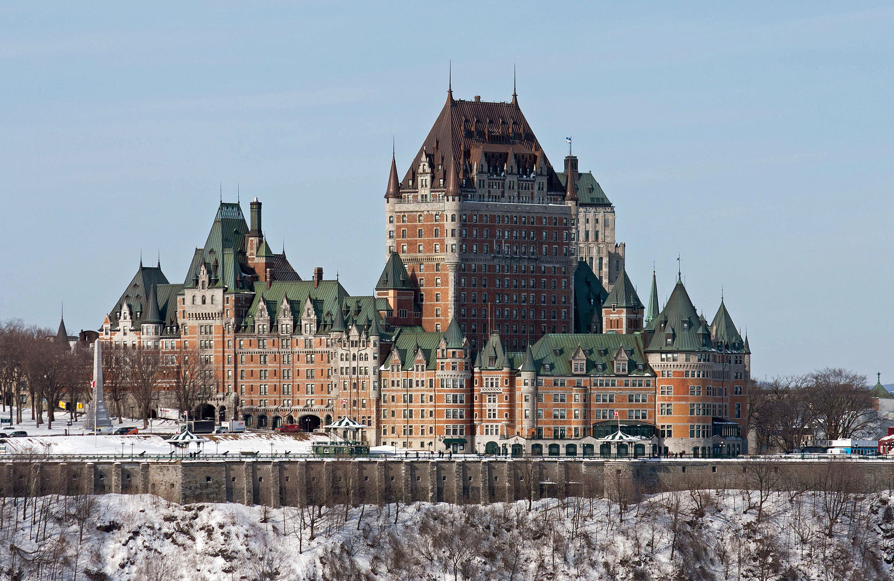

Welcome to the Château Frontenac Appreciation Page!

What makes the Chateau Frontenac Castle so special
Chateau is the French word for castle -- and this hotel one of the rare buildings in Canada deserving that name. You will find the Château Frontenac in Old Quebec's Upper Town,
built on the promontory of Quebec with an incredible viewpoint on the Saint Lawrence River. It is a touristic spot that doubles as a place to stay if the budget permits.
- The Chateau Frontenac received the designation of a
National Historic Site of Canada.
Fun fact!
- There was another hotel preceeding the Chateau Frontenac on site -- it was known as the Château Haldimand, built in the 1780s.
Nothing remains of that particular hotel as it was fully demolished to be surpassed by the current occupant.